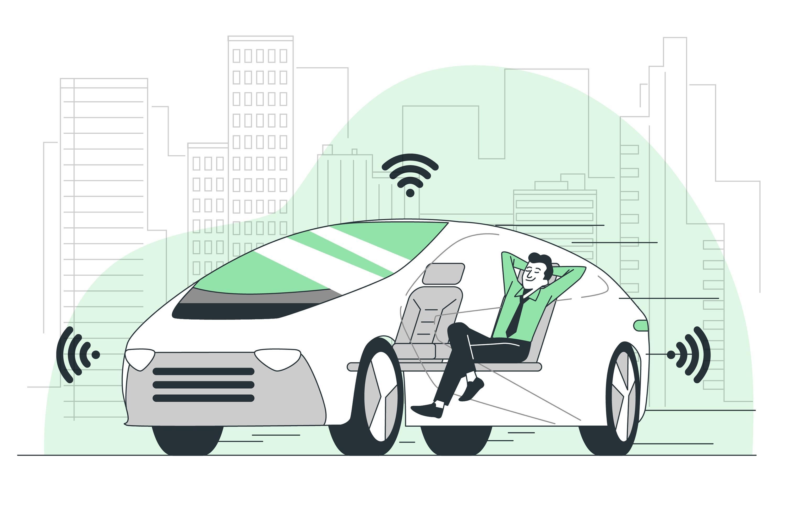

Avanços na tecnologia de veículos autônomos prometem transformar o futuro da mobilidade
Carros autônomos e sua influência na maneira como nos deslocamos e interagimos com as cidades
Data: 28 de junho de 2023
A tecnologia de veículos autônomos tem sido um dos campos mais empolgantes e promissores do setor automotivo nos últimos anos. Com avanços significativos em inteligência artificial, sensores e conectividade, os carros autônomos estão cada vez mais próximos de se tornarem uma realidade comum em nossas estradas. Essa revolução promete transformar não apenas a forma como nos deslocamos, mas também como interagimos com as cidades e o ambiente ao nosso redor. Os veículos autônomos oferecem uma série de benefícios potenciais para a sociedade. Um dos principais é a segurança viária. Estudos mostram que a grande maioria dos acidentes de trânsito é causada por erros humanos. Com os carros autônomos, a intervenção humana é minimizada, o que pode reduzir significativamente a ocorrência de acidentes e salvar vidas. Além disso, os veículos autônomos têm o potencial de melhorar a eficiência do tráfego e reduzir congestionamentos. Com a capacidade de se comunicar uns com os outros e com a infraestrutura da cidade, esses carros podem tomar decisões mais inteligentes e coordenadas, otimizando o fluxo de tráfego e reduzindo o tempo de viagem. A mobilidade também será transformada pela adoção de carros autônomos. Pessoas que anteriormente não podiam dirigir, como idosos e pessoas com deficiência, terão a liberdade de se locomover de forma independente. Além disso, o compartilhamento de veículos autônomos poderá se tornar uma alternativa mais viável e econômica em comparação com a posse de um carro particular, levando a uma redução no número de veículos nas ruas e a uma utilização mais eficiente dos recursos. No entanto, com todas as promessas e benefícios, também surgem desafios. Questões relacionadas à segurança cibernética, privacidade dos dados, responsabilidade legal e aceitação pública precisam ser abordadas de maneira adequada. A confiança dos usuários é fundamental para a adoção em massa dos veículos autônomos, e é essencial garantir que esses sistemas sejam seguros, confiáveis e éticos. Os governos e as indústrias automotiva e tecnológica estão trabalhando em conjunto para criar marcos regulatórios que permitam a implementação segura dos veículos autônomos. Testes e programas pilotos estão sendo conduzidos em várias cidades ao redor do mundo para coletar dados e aprimorar ainda mais a tecnologia. À medida que avançamos rumo a um futuro com carros autônomos, é importante considerar não apenas os aspectos tecnológicos, mas também as implicações sociais, econômicas e urbanísticas dessa transformação. O desenvolvimento de uma infraestrutura adequada, a adaptação das cidades e a capacitação dos profissionais envolvidos são elementos cruciais para garantir uma transição suave e bem-sucedida para esse novo paradigma da mobilidade. Os carros autônomos estão se aproximando rapidamente de se tornarem uma parte integrante de nosso cotidiano. Com inúmeros benefícios e desafios a serem enfrentados, é fundamental que continuemos a investir em pesquisa, desenvolvimento e colaboração entre os setores público e privado para aproveitar todo o potencial dessa tecnologia e moldar um futuro da mobilidade mais seguro, eficiente e sustentável.